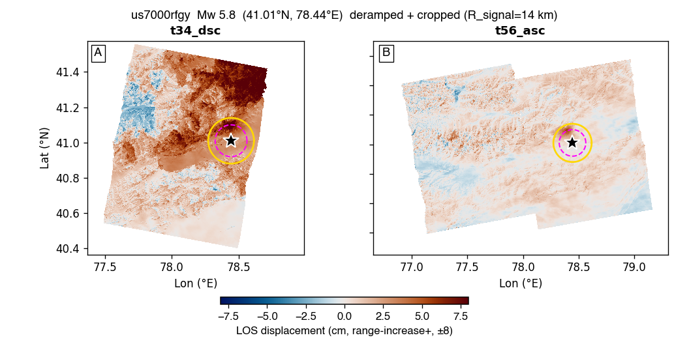

us7000rfgy — Mw 5.8 — GBIS report
Event: 136 km NNW of Tumxuk, China · (41.010°N, 78.444°E, depth 9.0 km)
USGS NP1: strike 85.4° / dip 49.5° / rake 83.5°
USGS NP2: strike 275.4° / dip 40.9° / rake 97.5°
Status: complete — GBIS inversion ran but FAILED diagnostics (see §3).
1. Raw observations (deramped + cropped)

2. Two-round iterative downsampling (Pass-1 zoned → Pass-2 synth-quadtree)
No subsample_v9_zoned.mat found — run Stage 4 (qsRunFullEvent) first.
3. GBIS inversion result — posterior + diagnostics
| parameter | posterior median | p16 .. p84 | prior bound | USGS NP1 |
|---|
| L (km) | 0.01 | 13.38 .. 13.43 | 3.84 .. 13.43 | — |
| W (km) | 0.01 | 9.78 .. 9.82 | 2.81 .. 9.82 | — |
| Z_top (km) | 0.01 | 13.98 .. 14.00 | 0.10 .. 14.00 | — |
| dip (°) | -56.6 | 55.8 .. 57.4 | 14.5 .. 84.5 | 49.5 |
| strike (°) | 325.2 | 144.9 .. 145.3 | 25.4 .. 145.4 | 85.4 |
| X (km) | 0.01 | 9.53 .. 9.59 | -9.59 .. 9.59 | — |
| Y (km) | 0.01 | 6.10 .. 6.82 | -9.59 .. 9.59 | — |
| SS (m) | +1.012 | -1.039 .. -0.985 | -2.000 .. +2.000 | — |
| DS (m) | -0.477 | +0.461 .. +0.493 | -2.000 .. +2.000 | — |
| |slip| (m) | 1.119 | | — |
| rake (°) | 154.8 | | 83.5 |
| Mw | 6.38 ± 0.01 | | 5.8 |
USGS-convention values shown (dip>0, strike, rake). Red row = posterior median within 2% of a prior bound (railed).
诊断结论: FAIL
acceptance 0.21 (target 0.20–0.45) · ESS 3575 (≥500) · Geweke |z| 4.1 (≤2)
VR per track: t34_dsc -0.79 · t56_asc -0.88 (≥0.50)
未通过项: stationarity (Geweke); param-at-bound: L,W,Z_top,Strike,X; VR
4. Beachball comparison
⏳ Not generated — needs the full-mode figure helper. the beachball (full-mode figure helper).
5. Triplet — data / model / residual
⏳ Not generated — needs the full-mode figure helper. the data/model/residual triplet (full-mode figure helper).
6. Joint-posterior corner plot
⏳ Not generated — needs the full-mode figure helper. the corner plot (full-mode figure helper).
7. Burn-in / chain trace
⏳ Not generated — needs the full-mode figure helper. the chain trace (full-mode figure helper).